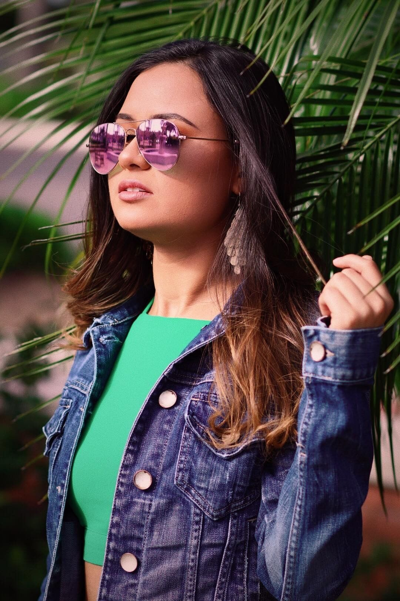
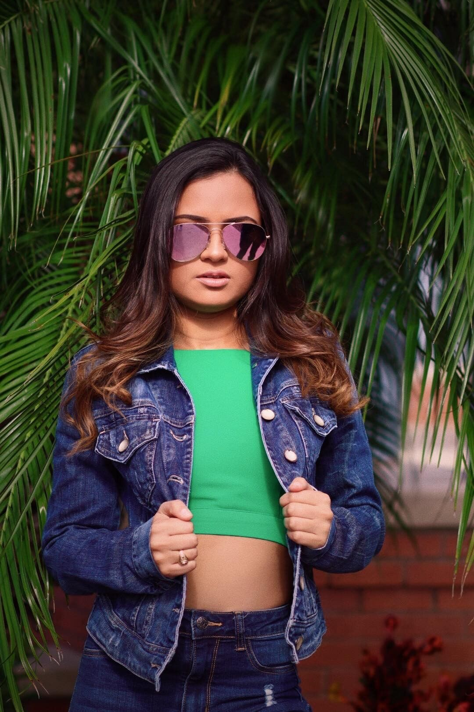

This day made me want to take more photos. The guy in the photo is my friend Josh, I’ve known him since I was a
freshman in college. He’s really cool and we both share the same interest in photography. He reached out to me
a while back and asked me if I wantedto do a photoshoot and be the model. I said yes and It was a really
good time. I’m not much of a model, but I love being behind the camera. This made me want to do a photoshoot
again, but this time behind the camera. I reached out to Josh asking him I wanted to do a photoshoot again, but
this time with a model where I can join taking photos as well. He reached out to one of his high school
friends. She liked the idea and volunteered to be our model. This was my first-time taking photos of someone
I didn’t know personally, I was very nervous. I don’t really have friends to reach out to have photos shoots
like this, so this was new to me. This day I experimented with the different kind of shots I can take at a
simple location. This day was the start of a journey that I decided I wanted to take more photos and keep on learning.
I don’t think I would’ve experienced this feeling of expanding with my photography if it wasn’t testing out something new.As well as have a
friend who seems to be as passionate as I am. Therefore, thanks for this experience Josh.


12/26/2018
This is Ale, the model that we had for this shoot. She was so kind and really nice to work with. She threw
out some amazing poses and here are just two of my favorite shots. Hopefully I get to do something else
like this with her again. Thanks Ale, for being my first model I get to shoot, and for being so nice to
me.